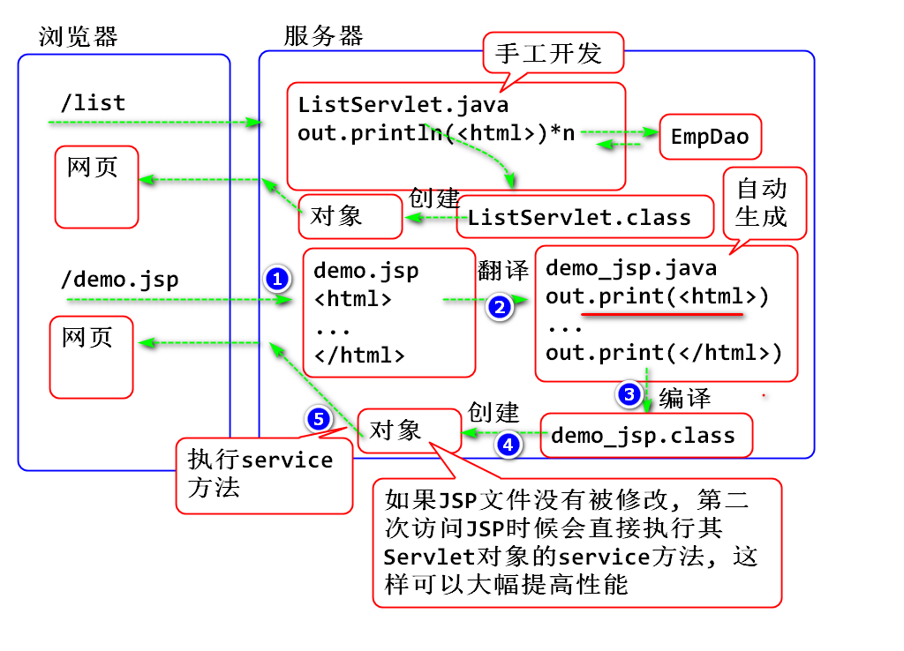

使用 Servlet+JDBC 实现员工列表.
问题:
数据库连接池负责分配、管理和释放数据库连接，它允许应用程序重复使用一个现有的数据库连接，而不是再重新建立一个；
在需求数据连接数超过可连接总数时候可以控制最大连接数, 避免连接过载, 保护数据库连接资源.
这项技术能明显提高对数据库操作的性能, 同时限制数据库连接总数避免资源过载.
数据库连接池的管理策略
使用步骤
导入DBCP, MySQL JDBC, JUnit
<dependency>
<groupId>commons-dbcp</groupId>
<artifactId>commons-dbcp</artifactId>
<version>1.4</version>
</dependency>
<dependency>
<groupId>mysql</groupId>
<artifactId>mysql-connector-java</artifactId>
<version>5.1.47</version>
</dependency>
<dependency>
<groupId>junit</groupId>
<artifactId>junit</artifactId>
<version>4.12</version>
</dependency>
编写测试案例:
public class TestCase {
@Test
public void testDBCP() throws Exception {
//BasicDataSource 就是Apache提供的数据库
//连接池组件, 使用步骤:
//1. 创建连接池对象
//2. 设置4个必须的连接池参数
// driverClass, url, username, password
//3. 设置可选的数据库连接管理策略参数
// 初始连接数: 先创建的连接数量
// 最大连接数: 最多创建的连接数量
// 空闲连接数: 连接用完以后保持连接数
// ...
BasicDataSource ds =
new BasicDataSource();
//设置必须参数
ds.setDriverClassName("com.mysql.jdbc.Driver");
ds.setUrl("jdbc:mysql://localhost:3306/web");
ds.setUsername("root");
ds.setPassword("root");
//设置可选参数
ds.setInitialSize(5); //Initial: 初始的
ds.setMaxActive(50); //最大连接数
ds.setMaxIdle(10); //最大空闲(Idle)连接数
//要合理设置可选参数.
//从数据库连接池中拿到数据库连接
Connection conn = ds.getConnection();
String sql = "select 'Hello World' as s";
Statement st = conn.createStatement();
ResultSet rs=st.executeQuery(sql);
while(rs.next()) {
String s = rs.getString("s");
System.out.println(s);
}
//执行close()方法, 将连接归还到连接池
conn.close();
}
}
测试:
利用数据库连接池重构 DBUtil
编写配置文件 db.properties
driver=com.mysql.jdbc.Driver
url=jdbc:mysql://localhost:3306/web?characterEncoding=utf8&useUnicode=true&useSSL=false
username=root
password=root
initial=5
max=50
idle=10
编写DBUtil类
public class DBUtil {
private static BasicDataSource ds;
static {
ds = new BasicDataSource();
//读取配置文件, 初始化连接池对象
Properties cfg = new Properties();
try {
InputStream in = DBUtil.class.getClassLoader()
.getResourceAsStream("db.properties");
cfg.load(in);
in.close();
String driver=cfg.getProperty("driver");
String url=cfg.getProperty("url");
String username=cfg.getProperty("username");
String password=cfg.getProperty("password");
int initial=Integer.parseInt(
cfg.getProperty("initial"));
int max = Integer.parseInt(
cfg.getProperty("max"));
int idle = Integer.parseInt(
cfg.getProperty("idle"));
ds.setDriverClassName(driver);
ds.setUrl(url);
ds.setUsername(username);
ds.setPassword(password);
ds.setInitialSize(initial);
ds.setMaxActive(max);
ds.setMaxIdle(idle);
} catch (Exception e) {
e.printStackTrace();
throw new RuntimeException(e);
}
}
public static Connection getConnection()
throws SQLException {
return ds.getConnection();
}
public static void close(Connection conn) {
try {
if(conn!=null) conn.close();
} catch (SQLException e) {
e.printStackTrace();
}
}
}
编写测试案例
@Test
public void testDBUitl() throws Exception {
//测试 DBUtil管理的连接池对象是否能够连接到数据库
//从连接池拿到连接
Connection conn = DBUtil.getConnection();
String sql = "select 'DBCP' as s";
Statement st = conn.createStatement();
ResultSet rs = st.executeQuery(sql);
while(rs.next()) {
String str = rs.getString("s");
System.out.println(str);
}
DBUtil.close(conn); //归还连接
}
测试
利用DAO将页面表现和数据访问进行分离
步骤
创建Emp类, 用于封装数据:
/**
* 创建员工类, 封装员工数据
* 业务实体(entity)类, 封装业务数据的类
* 生成 有参构造器, get set 方法, 生成toString
*/
public class Emp {
private int empno;
private String ename;
private int mgr;
private Date hiredate;
private int deptno;
private double salary;
private double comm;
public Emp() {
}
public Emp(int empno, String ename, int mgr, Date hiredate, int deptno, double salary, double comm) {
super();
this.empno = empno;
this.ename = ename;
this.mgr = mgr;
this.hiredate = hiredate;
this.deptno = deptno;
this.salary = salary;
this.comm = comm;
}
public int getEmpno() {
return empno;
}
public void setEmpno(int empno) {
this.empno = empno;
}
public String getEname() {
return ename;
}
public void setEname(String ename) {
this.ename = ename;
}
public int getMgr() {
return mgr;
}
public void setMgr(int mgr) {
this.mgr = mgr;
}
public Date getHiredate() {
return hiredate;
}
public void setHiredate(Date hiredate) {
this.hiredate = hiredate;
}
public int getDeptno() {
return deptno;
}
public void setDeptno(int deptno) {
this.deptno = deptno;
}
public double getSalary() {
return salary;
}
public void setSalary(double salary) {
this.salary = salary;
}
public double getComm() {
return comm;
}
public void setComm(double comm) {
this.comm = comm;
}
@Override
public String toString() {
return "Emp [empno=" + empno + ", ename=" + ename + ", mgr=" + mgr + ", hiredate=" + hiredate + ", deptno="
+ deptno + ", salary=" + salary + ", comm=" + comm + "]";
}
}
创建EmpDAO封装数据访问逻辑
/**
* 封装对 Emp 表的数据访问功能
*/
public class EmpDao {
/**
* 从数据库中查询全部的员工数据, 封装到List
* 返回, list中的每个元素是一个Emp对象
* @return 全部的员工数据
*/
public List<Emp> findAll(){
String sql = "select empno, ename, mgr, "
+ "hiredate, deptno, salary, comm "
+ "from t_emp";
Connection conn = null;
try {
conn = DBUtil.getConnection();
Statement st = conn.createStatement();
ResultSet rs = st.executeQuery(sql);
List<Emp> list = new ArrayList<>();
while(rs.next()) {
int empno = rs.getInt("empno");
String ename = rs.getString("ename");
int mgr = rs.getInt("mgr");
Date hiredate=rs.getDate("hiredate");
int deptno = rs.getInt("deptno");
double salary = rs.getDouble("salary");
double comm = rs.getDouble("comm");
Emp emp = new Emp(empno, ename, mgr, hiredate, deptno, salary, comm);
list.add(emp);
}
return list;//正常结果
} catch (Exception e) {
e.printStackTrace();
//错误情况!
throw new RuntimeException(e); //错误结果
} finally {
DBUtil.close(conn);
}
}
}
测试:
@Test
public void testEmpDao() {
EmpDao dao = new EmpDao();
List<Emp> list = dao.findAll();
for (Emp emp : list) {
System.out.println(emp);
}
}
编写Servlet
public class ListServlet extends HttpServlet {
private static final long serialVersionUID = 1L;
protected void doGet(
HttpServletRequest request,
HttpServletResponse response)
throws ServletException, IOException {
//获取全部需要显示的数据
EmpDao dao = new EmpDao();
List<Emp> list = dao.findAll();
//输出页面显示数据
response.setContentType("text/html;charset=utf-8");
PrintWriter out = response.getWriter();
out.println("<!DOCTYPE html>");
out.println("<html>");
out.println("<head>");
out.println("<meta charset=\"UTF-8\">");
out.println("</head>");
out.println("<body>");
out.println("<h1>员工列表</h1>");
//遍历 list 集合拼接表格
out.println("<table border='1'>");
out.println("<tr>");
out.println("<td>编号</td>");
out.println("<td>姓名</td>");
out.println("<td>领导</td>");
out.println("<td>入职日期</td>");
out.println("<td>部门号</td>");
out.println("<td>薪资</td>");
out.println("<td>提成</td>");
out.println("</tr>");
for(Emp emp : list) {
out.println("<tr>");
out.println("<td>"+emp.getEmpno()+"</td>");
out.println("<td>"+emp.getEname()+"</td>");
out.println("<td>"+emp.getMgr()+"</td>");
out.println("<td>"+emp.getHiredate()+"</td>");
out.println("<td>"+emp.getDeptno()+"</td>");
out.println("<td>"+emp.getSalary()+"</td>");
out.println("<td>"+emp.getComm()+"</td>");
out.println("</tr>");
}
out.println("</table>");
out.println("</body>");
out.println("</html>");
}
}
配置 web.xml
<servlet>
<description></description>
<display-name>ListServlet</display-name>
<servlet-name>ListServlet</servlet-name>
<servlet-class>day04.ListServlet</servlet-class>
</servlet>
<servlet-mapping>
<servlet-name>ListServlet</servlet-name>
<url-pattern>/list</url-pattern>
</servlet-mapping>
部署测试:
http://localhost:8080/Servlet04/list
JSP: Java服务器页面
J-Java
S-Server
P-Page
JSP编程好处:
JSP 的优势在于 使用HTML风格编码编写Servlet类! JSP非常适合显示网页符数据.
<%@ page language="java"
contentType="text/html; charset=utf-8"
pageEncoding="utf-8"%>
<!DOCTYPE html>
<html>
<head>
<meta charset="utf-8">
<title>第一个JSP</title>
</head>
<body>
<h1>第一个JSP</h1>
<!-- JSP 中可以嵌入 "Java 程序脚本" -->
<%
String str = "Hello World!";
%>
<!-- JSP 表达式, 用于计算表达式值 -->
<p><%=str%></p>
</body>
</html>
JSP运行过程:
这么处理JSP性能好

Java 脚本 : 用于处理程序逻辑, 可以写任意语句, 流程控制等
<%
//Java 脚本
long now = System.currentTimeMillis();
long year = now/1000/60/60/24/365 + 1970;
%>
Java 脚本中的语句会翻译到 service 方法中的语句
Java 表达式: 用于计算并且输出表达式
<!-- JSP 表达式, 用于计算表达式值并且在网页上输出-->
<p><%=now/1000%60%></p>
<p><%=year%></p>
<p><%=add(times, 1)%></p>
Java 声明: 用于为Servlet声明成员
<!-- JSP 中的"声明", -->
<%!
//用于为当前类声明 属性/方法/静态成员等
//编译以后会成为 Servlet 中的成员
int times = 55;
int add(int a, int b){
return a+b;
}
%>
案例:
<%@ page language="java"
contentType="text/html; charset=utf-8"
pageEncoding="utf-8"%>
<!DOCTYPE html>
<html>
<head>
<meta charset="utf-8">
<title>Java 程序</title>
</head>
<body>
<h1>JSP中的Java</h1>
<!-- JSP 中的"声明", -->
<%!
//用于为当前类声明 属性/方法/静态成员等
//编译以后会成为 Servlet 中的成员
int times = 55;
int add(int a, int b){
return a+b;
}
%>
<%
//Java 脚本
long now = System.currentTimeMillis();
long year = now/1000/60/60/24/365 + 1970;
%>
<!-- JSP 表达式, 用于计算表达式值并且在网页上输出-->
<p><%=now/1000%60%></p>
<p><%=year%></p>
<p><%=add(times, 1)%></p>
</body>
</html>